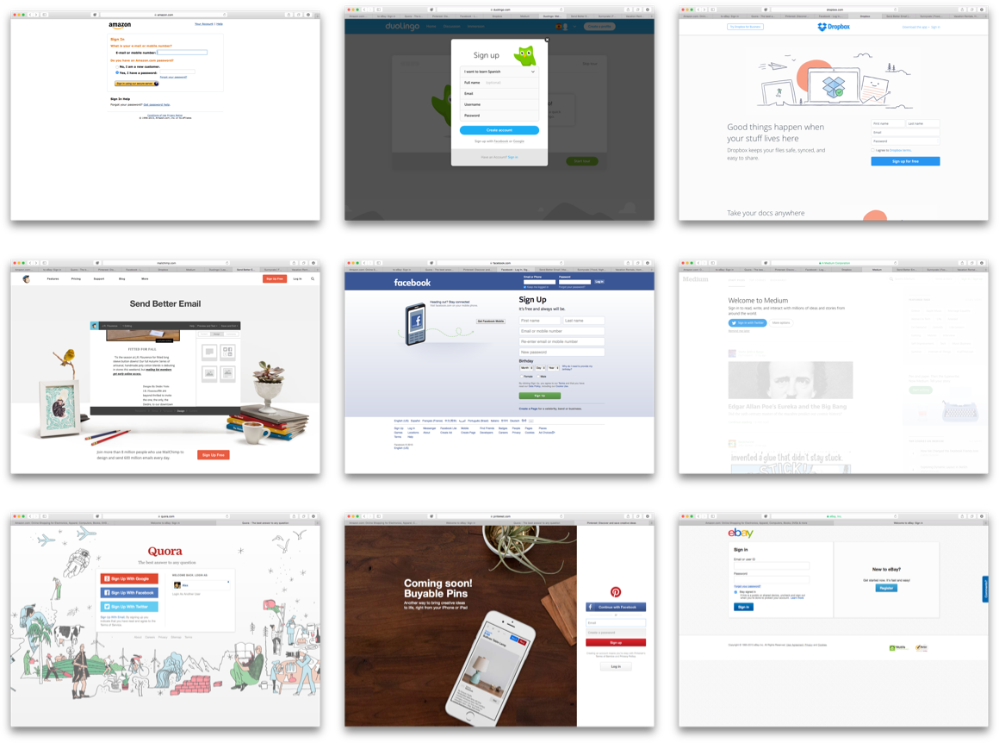

There is a limit to what I can discuss and show of my design work while I was at Groupon because of the Non-Disclosure Agreement I signed. What I can talk about is what I learned about designing and being a designer. Before going any further, I would really like to thank Helena Seo and the rest of Consumer Experience team, also known as The Dream Team, for all the lessons they have taught me about being a designer and just for being great people to be around.
There is a limit to what I can discuss and show of my design work while I was at Groupon because of the Non-Disclosure Agreement I signed. What I can talk about is what I learned about designing and being a designer. Before going any further, I would really like to thank Helena Seo and the rest of Consumer Experience team, also known as The Dream Team, for all the lessons they have taught me about being a designer and just for being great people to be around.
There is a limit to what I can discuss and show of my design work while I was at Groupon because of the Non-Disclosure Agreement I signed. What I can talk about is what I learned about designing and being a designer. Before going any further, I would really like to thank Helena Seo and the rest of Consumer Experience team, also known as The Dream Team, for all the lessons they have taught me about being a designer and just for being great people to be around.
There is a limit to what I can discuss and show of my design work while I was at Groupon because of the Non-Disclosure Agreement I signed. What I can talk about is what I learned about designing and being a designer. Before going any further, I would really like to thank Helena Seo and the rest of Consumer Experience team, also known as The Dream Team, for all the lessons they have taught me about being a designer and just for being great people to be around.
Competitive audit screenshots

Research & Competitive Audits
My internship started with learning how to do the prep work for designing effective solutions to complex problems. Competitive audits are helpful in learning about existing solutions on similar problems. The context of the problem you are designing for is never going to be exactly the same as a competitor’s, so it is meaningless to simply copy their work. Instead by understanding competitor’s intent behind certain decisions, you can avoid pitfalls and understand existing patterns that customers are already used to. They also serve almost as a warm up by having you think through the trade-offs competitors are making and get you started thinking about your own customers and their needs.Designing Systems
Designing at Groupon requires extensive systems thinking. Groupon has 3 main types of offerings: Groupon Local, Groupon Goods, and Groupon Getaways. The optimal way to purchase an iPad case from Groupon Goods is not optimal for booking your trip to the Bahamas through Groupon Getaways. Even within the main categories, there are differences between deals. For example, how you book a tour is rather different than how you would book a hotel. It’s an interesting challenge crafting a consistent experience across Groupon that is still tailored for each unique offering. Furthermore, Groupon is used on the desktop, mobile web, and as a mobile app. I got an opportunity to learn about the unique challenges and differences while designing for different platforms. They each have their own constraints, for example the mobile app’s release cycle is constrained by the iOS and Android app store while mobile web has more technological constraints and struggles with performance compared to the other platforms. Users also have different triggers and intents for each of these different platforms.Designing at Groupon taught me about designing for scale, not just in terms of number of users, but also designing to scale across a very diverse system in both offerings and available platforms.
Interaction and Animation
After designing the overall flow and pages at a higher level, it was time to dig into the interactions and motion. This was a difficult step to make a case for, many times product managers would see this as unnecessary time and engineering effort to implement. While that was the case for certain MVPs, interactions allow us to maximize limited screen estate on mobile devices for content by minimizing the space navigation takes. Motion design helps with altering the user’s sense of time as elements load. It also provides logic to how the different pages and components of our app fits together. These subtle interactions and motions can often make an impact on both the users’ experience with Groupon but also the ease in which they can complete their goals.
I used a moodboard as part of my research for personality.

Personality in Product Design
During my internship I researched and presented about “personality” in product design. I started by examining examples such as Dropbox’s illustrations, Slack’s copywriting, and even movie examples such as Samantha from Her. The question I wanted to answer is how could we design a product that people not only like, but love using. Groupon aspired to be like a friend of the user, and that needed to be reflected in the way we interacted with the user. For example providing feedback after action required more human sounding copy instead of the automated responses. It meant that as designers we needed to better predict the user intent behind their actions and provide the appropriate feedback.
Future
At the beginning of my internship, my manager gave me a 5 Strengths Personality Test and my greatest strength tested out as Futuristic. I design because I like how designers bridge the gap between the present and the future. We can turn possibilities into realities. At a large company, I had to learn to navigate the obstacles in pursuing that north star design. There are frustrations along the way, and my final presentation was about confronting that frustration and a thank you for the people who made it possible for me to get past it.Framer →